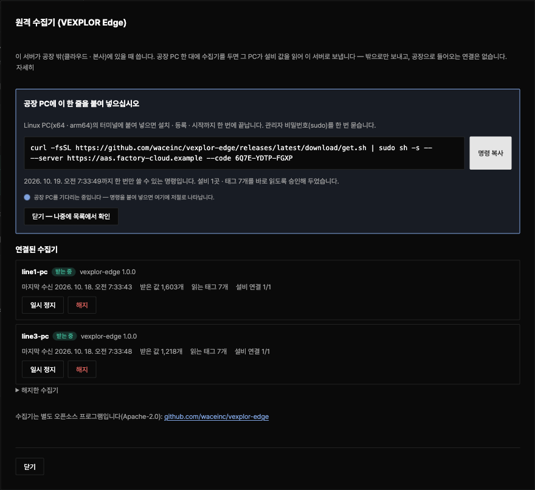
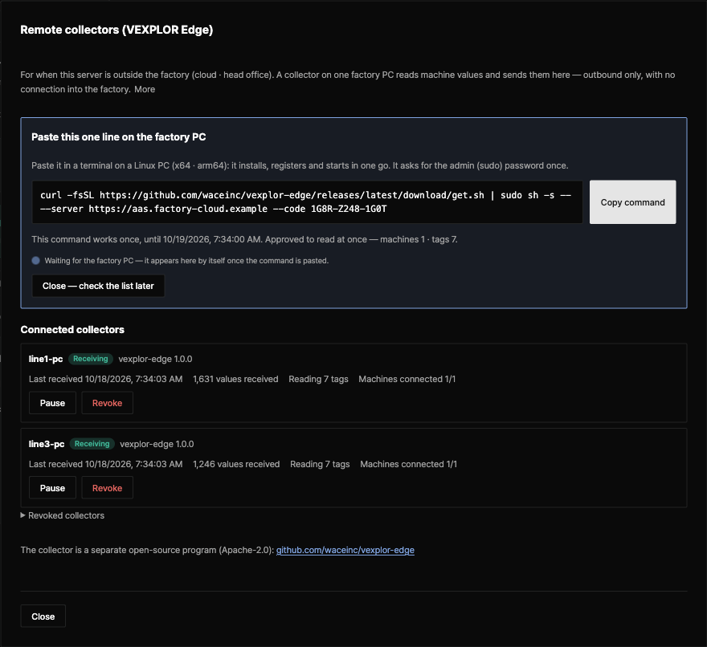

오픈소스 · Apache-2.0 · v1.0.0Open source · Apache-2.0 · v1.0.0
VEXPLOR Edge는 공장 PC 한 대에서 승인한 설비 값만 읽어 밖으로만 보냅니다
VEXPLOR Edge reads only the approved machine values on one factory PC and sends them out — outbound only
서버가 클라우드 · 본사처럼 공장 밖에 있을 때 쓰는 원격 수집기입니다. VEXPLOR AAS Studio 화면에서 단추를 누르고, 나온 한 줄을 공장 PC에 붙여 넣으면 설치 · 등록 · 승인까지 끝납니다. 공장으로 들어오는 연결도, 원격 정지도, PLC에 쓰는 기능도 없습니다.
The remote collector for when the server is outside the factory — in the cloud or at head office. Press one button on the VEXPLOR AAS Studio screen, paste the line it shows on the factory PC, and install, registration and approval are done. Nothing connects into the factory, there is no remote stop, and it never writes to a PLC.


- 1
- 설치 명령 한 줄install line
- 0
- 공장으로 들어오는 연결connections into the factory
- 3
- OPC UA · Modbus TCP · MQTTOPC UA · Modbus TCP · MQTT
- 2
- Linux x64 · arm64Linux x64 · arm64
원클릭One-click
VEXPLOR Edge는 단추 하나와 붙여 넣기 한 줄로 연결됩니다
VEXPLOR Edge connects with one button and one pasted line
| 단계Step | 어디서Where | 하는 일What happens |
|---|---|---|
| 1. 「+ 수집기 연결」1. "+ Connect a collector" | 어디서WhereAAS Studio 설정 → 원격 수집기AAS Studio Settings → Remote collectors | 하는 일What happens서버 주소와 읽을 목록을 확인하고 「연결 명령 만들기」. 「이 목록을 바로 읽게 승인」을 켜 두면 승인도 끝납니다Check the server address and the read list, then "Make the connect command". With "Approve this list" ticked, the approval is done too |
| 2. 한 줄 붙여 넣기2. Paste one line | 어디서Where공장 Linux PC 터미널Terminal on the factory Linux PC | 하는 일What happens그 PC의 CPU에 맞는 판을 내려받아 SHA256SUMS와 대조하고 설치 · 등록 · 서비스 시작Downloads the package for the PC's CPU, checks SHA256SUMS, installs, registers and starts the service |
| 3. 받는 중3. Receiving | 어디서WhereAAS Studio 화면AAS Studio screen | 하는 일What happensPC가 연결되는 순간 그 이름과 「받는 중」이 뜨고, 값은 그 설비 파일의 「수집」 칸에 10초마다 들어옵니다The moment the PC connects its name and "Receiving" show; values come into "Collect" for that machine file every 10 s |
받는 쪽은 규격 vexplor.edge/1을 따르는 서버입니다. 지금은 VEXPLOR AAS Studio가 받고, VEXPLOR Logic Studio Cloud도 같은 규격으로 받습니다(설계 파트너 회사부터 순서대로 열고 있습니다). 서버가 설비와 같은 망에 있으면 AAS Studio 서버 안의 수집기로 충분합니다.
Any server that follows the contract vexplor.edge/1 receives it. VEXPLOR AAS Studio does today; VEXPLOR Logic Studio Cloud receives the same contract too (opened to design-partner companies first, in order). When the server is on the machines' network, the collector inside the AAS Studio server is enough.
하는 일What it does
VEXPLOR Edge가 하는 일과 하지 않는 일
What VEXPLOR Edge does — and does not
| 항목Item | 내용Detail |
|---|---|
| 읽기만Read only | 내용DetailPLC · 제어기에 쓰는 코드가 없습니다. 읽는 코드는 AAS Studio 서버의 수집기와 같습니다No code writes to a PLC or controller. It reads with the same code as the AAS Studio server's collector |
| 밖으로만Outbound only | 내용Detail서버 주소 443(또는 현장 프록시)으로만 나갑니다. 포트를 열지 않으므로 들어오는 연결이 없습니다It goes out to the server on 443 (or the site proxy) only. It opens no port, so there is no way in |
| 승인한 목록만Approved list only | 내용Detail서버에서 사람이 승인한 태그만 읽고, 목록이 바뀌면 다시 승인할 때까지 새 목록을 받지 않습니다It reads only tags a person approved on the server; a changed list waits for a new approval |
| 요청마다 서명Every request signed | 내용Detail등록할 때 그 PC에서 Ed25519 키를 만들고 모든 요청에 서명합니다. 개인 키는 PC 밖으로 나가지 않습니다It makes an Ed25519 key on the PC when registering and signs every request; the private key never leaves the PC |
| 끊겨도 잃지 않음Nothing lost on an outage | 내용Detail묶음을 디스크에 쌓았다가 순서대로 다시 보냅니다(기본 30일). 서버는 같은 묶음을 한 번만 저장합니다Batches wait on disk and go out in order (30 days by default); each is stored once |
| 바뀐 값만(선택)Changes only (optional) | 내용DetailOPC UA 구독과 불감대 — 태그 6개 · 1초 · 5분 실측: 283 KB → 88 KBOPC UA subscriptions with a deadband — 6 tags, 1 s, 5 minutes measured: 283 KB → 88 KB |
| 원격 정지 없음No remote stop | 내용Detail서버가 수집기에 내리는 명령은 없습니다. 해지된 수집기는 스스로 멈추고, 쌓인 값은 지우지 않고 둡니다The server sends no commands. A revoked collector stops by itself and keeps its queue |
| 자동 설치 없음No auto-install | 내용Detail새 판 알림만 받고, 설치는 사람이 합니다It reports a newer release; a person installs it |
연결Connections
VEXPLOR Edge가 연결하는 곳은 이 표가 전부입니다
This table is every place VEXPLOR Edge connects to
| 목적지Destination | 이유Why | 언제When |
|---|---|---|
| 서버 주소 443(또는 프록시)The server on 443 (or the proxy) | 이유Why읽을 목록 · 값 묶음 · 등록Read list, value batches, registration | 언제When늘Always |
| 승인한 목록의 설비 주소Machine addresses in the approved list | 이유Why값 읽기(OPC UA · Modbus TCP · MQTT)Reading values (OPC UA, Modbus TCP, MQTT) | 언제When승인 뒤After approval |
| 새 판 알림 주소Release notice address | 이유Why하루 한 번 새 판 확인 — 설치는 하지 않음Checks for a new version once a day — installs nothing | 언제When설정했을 때만Only if configured |
시험에서 모든 연결 시도를 기록해 이 표 밖의 연결이 없는지 확인합니다. 등록 코드는 24시간 동안 한 번만 쓸 수 있고, 수집기는 https 주소로만 서버에 연결합니다.
The tests record every connection attempt and check there is nothing outside this table. A registration code works once for 24 hours, and the collector connects to its server over https only.
확인한 것Verified
VEXPLOR Edge 1.0.0은 화면이 만든 명령 그대로 깨끗한 Linux에서 검증됐습니다
VEXPLOR Edge 1.0.0 was checked on clean Linux with the exact command the screen makes
- 서버 화면이 만든 명령을 깨끗한 Ubuntu 24.04(arm64 · x86_64)에 그대로 붙여 넣어 릴리스 내려받기 → SHA256SUMS 대조 → 설치 → 미리 승인된 등록 → OPC UA 가상 PLC 읽기 → 서버 저장까지 확인했습니다The command the server screen made was pasted as is on clean Ubuntu 24.04 (arm64 and x86_64): release download → SHA256SUMS check → install → pre-approved registration → reading an OPC UA virtual PLC → values stored on the server
- 실제 VEXPLOR AAS Studio 서버를 상대로 한 상호 시험을 저장소 CI에서 매번 실행하고, 규격 사본(스키마 · 예시 · 서명 예시)이 서버 쪽과 같은지 대조합니다Interop tests against a real VEXPLOR AAS Studio server run in the repository CI every time, and check the contract copy (schemas, examples, signing example) matches the server's
- 포트 열기 · 명령 실행 · 원격 정지 · 내장 비밀번호가 소스에 들어오면 시험이 실패합니다A listening port, running a command, a remote stop or a built-in password in the source fails the tests
- 화면 그림의 값은 가상 PLC(시뮬레이션) 시험 값이며 실제 설비 데이터가 아닙니다The values in the screen picture come from a virtual PLC (simulation), not real machine data
설치Install
VEXPLOR Edge는 명령 한 줄로 설치됩니다
VEXPLOR Edge installs with one command line
curl -fsSL https://github.com/waceinc/vexplor-edge/releases/latest/download/get.sh | sudo sh -s -- --server https://aas.example.com --code 7KQ4-M2XD-9PRT서버 화면이 서버 주소와 1회용 코드(24시간)를 채운 명령을 만들어 줍니다. 위 주소와 코드는 예시입니다. 인터넷이 막힌 PC에서는 Releases의 꾸러미와 SHA256SUMS를 옮겨 대조한 뒤 sudo ./install.sh --server … --code …를 실행합니다.
The server screen makes the command with the server address and a one-time code (24 h) filled in; the address and code above are examples. On a PC without internet, bring the package and SHA256SUMS from Releases, check them, then run sudo ./install.sh --server … --code ….